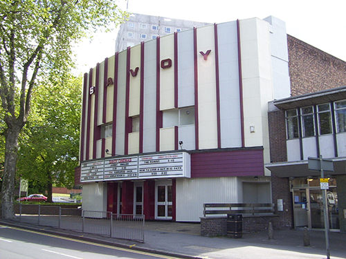

Cinema trip
Posted on September 5, 2015
by Rik Hemsley
Welcome back cinema trip - THIS SUNDAY the 6th of August 2015, 12pm!

Savoy cinema is important to some of our members. If you have visited a cinema this year, you will realise just how expensive it can be. The Savoy is affordable to many families who don’t have a great amount of disposable income.
This Sunday we have hired out a screen and invite you all to come and watch a movie, supporting a Nottingham institution. The School will be picking up the bill!
(If you are worried about a child that does not belong to the school – then contact as we may be able to accommodate them too)